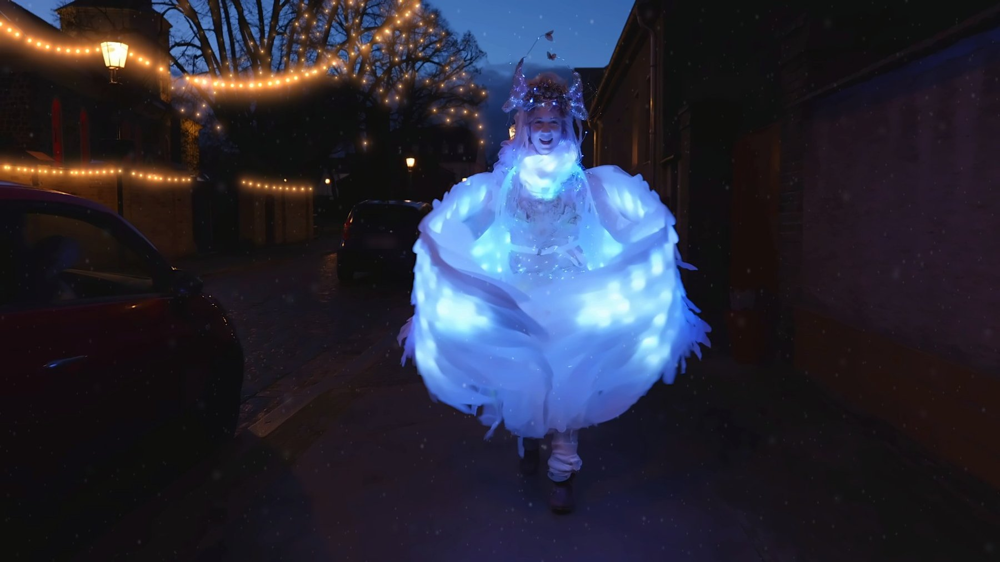
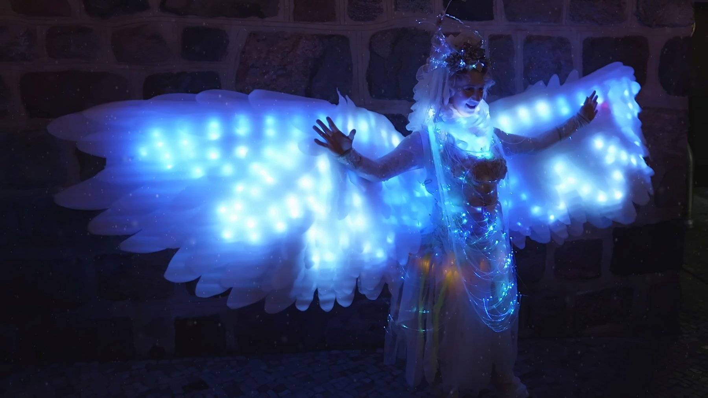
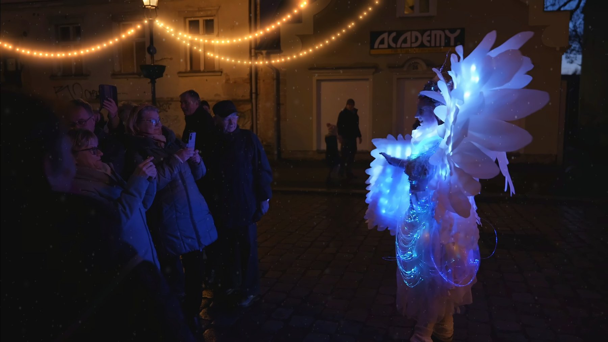
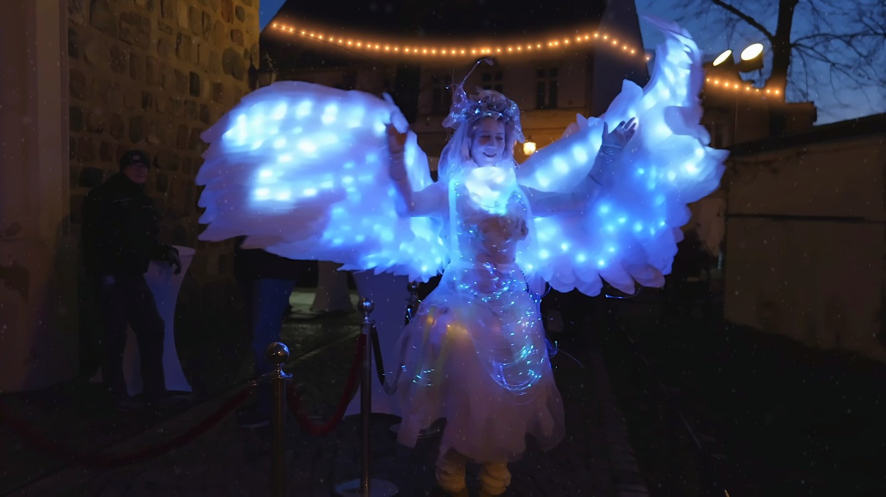

How long is the performance?
The Christmas angel is booked in several sets of 30 minutes each. How many sets suit your event is something we work out together.
The Winter Special: an angel made of light, right among your guests.

When the days grow short and the first frost hangs in the air, an angel comes down to see how people are keeping the light.
Softly it moves through the crowd, giving a glance, a smile, a beat of its wings — and whoever meets it carries a little of its glow back home.



The Christmas angel is booked in several sets of 30 minutes each. How many sets suit your event is something we work out together.
Yes. The Christmas angel is available as a daylight walking act and as an LED walking act with glowing wings — which comes into its own from dusk.
Lucina is the bringer of light — moving gracefully through the crowd, bringing gifts and wonder to those who dare to believe in magic and dreams.
Two fibre-optic beings drifting through the room like deep-sea lanterns — the most elegant of the LED sets, in several rounds of 20 to 30 minutes.
Artful, precise multi-hoop artistry right among your guests — as an interactive walkabout by day, or with glowing LED hoops after dark.
Vaudeville and vintage circus, Golden Twenties, Candyland, maritime, floral, fairytale and fantasy — solo or in a larger ensemble.